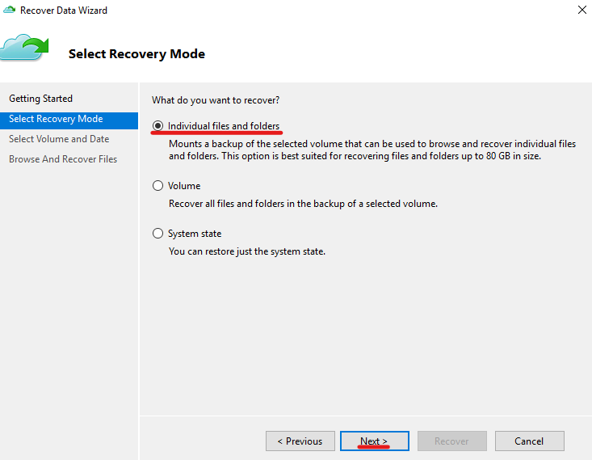
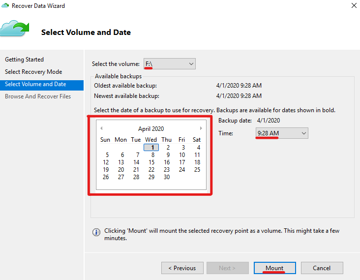
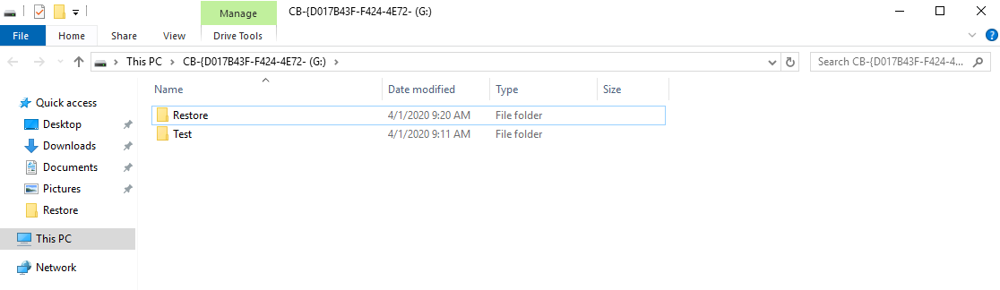
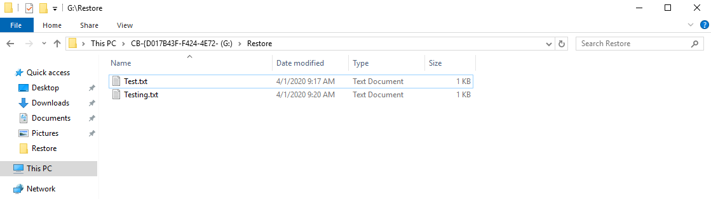

How to automatically backup and restore files and folders on Azure Stack Hub VMs using PowerShell
Overview
Recovery Services vaults store all backups and recovery points you create over time, and contain the backup policy applied to backed up machines.
This article explains how to set up the Microsoft Azure Recovery Services (MARS) agent to backup and restore files and folders from Azure Stack Hub VMs to Recovery Services vaults.
Note
By default a new Recovery Services vault will be created by the code below. If you do not wish to create one - you can use the ExistingVault switch in the AzureBackupConfig script.
Microsoft documentation
Backup Windows machines using MARS
Prerequisites
To complete the steps in this article, you must have appropriate access to a subscription in both the public Azure and Azure Stack Hub portals.
Important
The MARS agent is only supported on Windows VMs. Linux VMs are not supported.
Backup
Setup the MARS agent using PowerShell
You can find the script used in this article here. It provides docstrings on additional parameters that are not used in this article.
Declare variables
Enter details below to provide values for the variables in the scripts in this article:
| Variable name | Variable description | Input |
|---|---|---|
| $ArmEndpoint | The Azure Resource Manager endpoint for Azure Stack Hub | |
| $RGName | Name of the resource group in Azure Stack Hub which the VM resides in | |
| $VMName | Name of the virtual machine in Azure Stack Hub | |
| $CustomScriptFileName | The name of the custom script file | |
| $FileUri | URL to the custom script | |
| $ClientId | The application ID of a service principal with contributor permissions in Azure | |
| $ClientSecret | The password of the service principal specified in the ClientId parameter | |
| $TenantId | The Tenant/Directory ID of your AAD domain | |
| $AzureResourceGroup | The name of the resource group to be created in public Azure, where the Recovery Services vault will reside | |
| $VaultName | The name of the Recovery Services vault to be created in public Azure | |
| $EncryptionKey | The encryption key to encrypt the backups with, must be at least 16 characters and no greater than 40 characters in length | |
| $AzureLocation | The location in public Azure to deploy the Recovery Services vault | |
| $BackupDays | A comma separated list of the days to backup on | |
| $BackupTime1 | The first time to backup at on the specified backup days | |
| $BackupTime2 | The second time to backup at on the specified backup days (leave blank if not required) | |
| $BackupTime3 | The third time to backup at on the specified backup days (leave blank if not required) | |
| $RetentionLength | The number of days to keep each backup for | |
| $FoldersToBackup | A comma separated list of folders to backup. By default it will backup all drives |
Create a public Azure and Azure Stack Hub service principal name (SPN).
From an elevated (administrator) PowerShell console, run either the custom script extension or PowerShell script to download the required module and execute the backup process. The PowerShell script must be run from inside the target VM, whereas the custom script extension can be executed from a local machine.
Important
As the MARS script will be pulled from GitHub the VM must have internet access.
Warning
Spaces are not permitted within the individual script arguments passed to the Set-AzVMCustomScriptExtension cmdlet.
For example, Monday, Thursday should be passed as Monday,Thursday.
This also means that you cannot have any spaces in the folders to backup, e.g. C:\My Folder. If these are required, you must use the alternative PowerShell script and execute the code inside the VM itself.
# Initialise environment and variables
# Declare endpoint
$ArmEndpoint = ""
# Add environment
Add-AzEnvironment -Name "AzureStackUser" -ArmEndpoint $ArmEndpoint
# Login
Connect-AzAccount -EnvironmentName "AzureStackUser"
# Get location of Azure Stack Hub
$Location = (Get-AzLocation).Location
# Input variables
$ClientId = ""
$ClientSecret = ''
$TenantId = ""
$AzureResourceGroup = ""
$VaultName = ""
$EncryptionKey = ""
$AzureLocation = ""
$BackupDays = ""
$BackupTimes = ""
$RetentionLength = ""
$FoldersToBackup = ""
$RGName = ""
$VMName = ""
$CustomScriptFileName = ""
$FileUri = ""
$ScriptArguments = "-ClientId $ClientId -ClientSecret $ClientSecret -TenantId $TenantId -AzureResourceGroup $AzureResourceGroup -VaultName $VaultName -EncryptionKey $EncryptionKey -AzureLocation $AzureLocation -BackupDays $BackupDays -BackupTimes $BackupTimes -RetentionLength $RetentionLength -FoldersToBackup $FoldersToBackup -BackupNow"
$CommandToExecute = "$CustomScriptFileName $ScriptArguments"
# Add custom script extension to existing Windows VM
Write-Output -InputObject "Adding custom script extension to VM: $VMName."
Set-AzVMCustomScriptExtension -FileUri $FileUri -VMName $VMName -ResourceGroupName $RGName -Name $CustomScriptFileName -Location $Location -Run $CommandToExecute -SecureExecution
Tip
If the script fails and you need to see detailed error messages, the custom script extension logs can be found in the below folder on the virtual machine:
C:\Packages\Plugins\Microsoft.Compute.CustomScriptExtension\X.X.X\Status
Restore
Restore files and folders using the MARS agent GUI
On your desktop, click the Microsoft Azure Backup shortcut.

In Microsoft Azure Backup, in the right menu under Actions, click Recover Data.

On the Getting Started page of the Recover Data Wizard, select This server and click Next.

On the Select Recovery Mode page, select Individual files and folders and click Next.

On the Select Volume and Date page, select the:
Volume to restore files and folders from using the dropdown menu
Date of the backup to restore from
Time of the backup to restore from

Click Mount.
The Microsoft Azure Recovery Services Agent will begin mounting the volume from the specific backup date and time.
On the Browse and Recover Files page, click Browse to view the contents of the mounted backup volume.

A file explorer window will open showing your backed up files and folders.


Tip
You can drag and drop files and folders to restore them to a desired location on the VM.

When you're done, in the Recover Data Wizard, click Unmount to detach the backup volume from the VM.

In the Confirm Recovery Volume Unmount dialog box, click Yes.

The recovery volume will now detach from the VM. You have successfully restored files and folders using the MARS agent GUI.
Feedback
If you find a problem with this article, click Improve this Doc to make the change yourself or raise an issue in GitHub. If you have an idea for how we could improve any of our services, send an email to feedback@ukcloud.com.